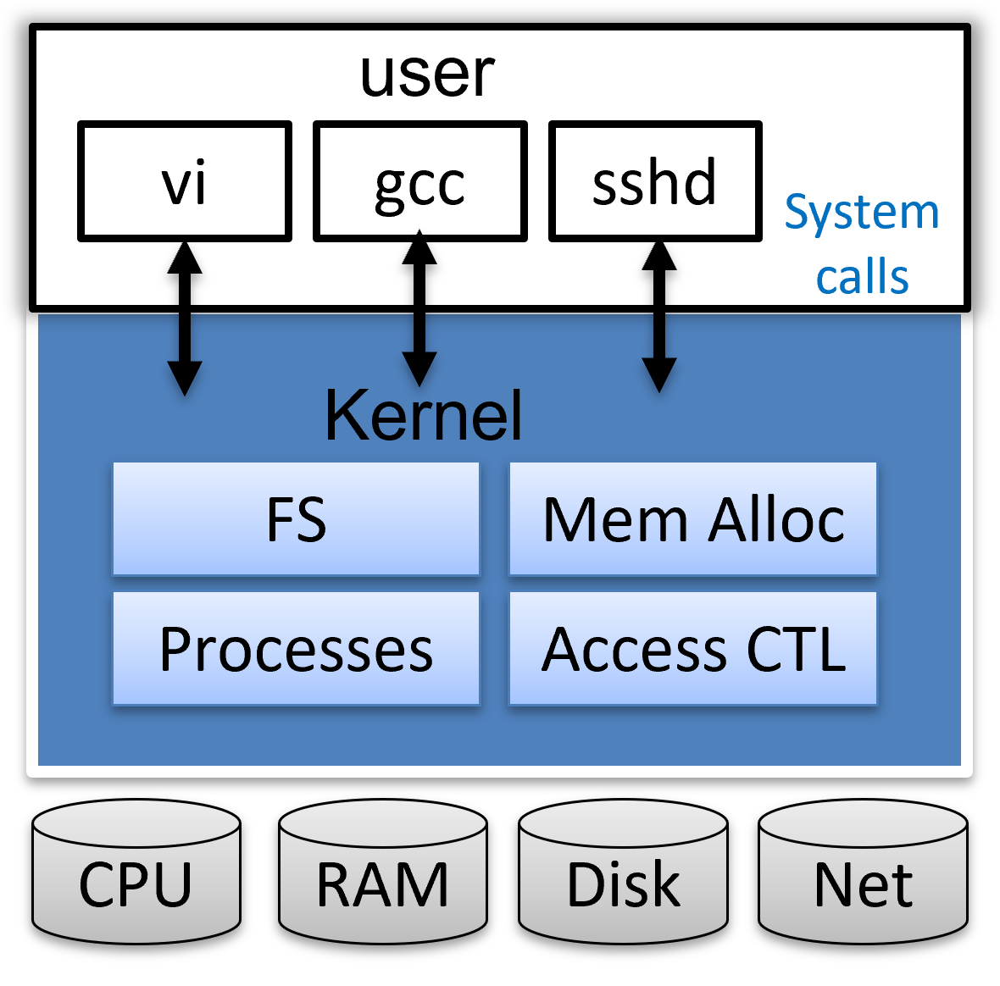

实验原理¶
这页怎么读
本页只讲与 Lab1 直接相关的原理，不求一次全看懂。
建议边做边看：先看第 2、3 节完成 sleep；再看第 4、5 节完成 pingpong；再看第 6 节完成 find；最后看第 7 节完成启动流程调试。
1. 先认识 XV6¶
XV6 是 MIT 用来教学的一个小型 Unix 风格操作系统。它的特点是：
- 代码量不大，适合阅读；
- 结构比较完整，包含进程、系统调用、文件系统、内存管理等核心模块；
- 和 Linux 在很多基本概念上相通，适合用来建立操作系统直觉。
官方参考资料
- XV6 MIT 官网 ：https://pdos.csail.mit.edu/6.S081/2020/
这是 MIT 6.S081 课程主页，包含课程安排、实验说明、工具说明，以及 xv6 和 xv6 book 的官方入口。 - xv6 book ：https://pdos.csail.mit.edu/6.828/2020/xv6/book-riscv-rev1.pdf
这是 xv6 的官方参考书，系统讲解了 xv6 的整体结构与核心机制。对Lab1来说，建议优先关注第 1 章 Operating system interfaces、第 2 章 Operating system organization 中与第一个进程相关的部分，以及第 4 章 Traps and system calls 中和系统调用有关的内容。
需要注意：官方资料很重要，但本课程实验做了适当调整；涉及具体要求时，请以本实验指导书为准。
对 Lab1 来说，你主要做两件事：
- 编写并运行几个 用户程序 ；
- 用 命令行 GDB 观察 XV6 的启动流程。

如果你把 XV6 想成一栋楼，那么：
- 用户程序在楼上活动；
- 内核在楼下管理水电、门禁和设备；
- 用户程序不能直接碰底层资源，必须通过系统调用向内核“申请服务”。
2. 用户程序¶
先分清一件事：Lab1 里的 sleep、pingpong 和 find，都是 在 XV6 用户态中运行的程序 。
它们通常写在 user/ 目录下，通过系统调用使用 XV6 内核提供的功能；这和 kernel/ 目录中的内核实现代码不是一类内容。
2.1 你在 Lab1 里到底在写什么？¶
对本实验来说，你主要是在做下面这件事：
- 在 xv6 仓库的
user/目录下编写 C 程序； - 把它加入
Makefile的UPROGS； - 编译并启动 XV6；
- 再进入 XV6，像使用普通命令一样运行它。
所以，Lab1 的重点不是一开始就去修改内核，而是先学会： 如何在 XV6 上编写、编译、运行用户程序 。
2.2 三件事不要混：写代码、编译启动、运行程序¶
很多同学第一次做实验时，最容易混淆的就是： 我到底是在哪里写代码，在哪里执行 make，又是在哪里运行 sleep？
可以直接记下面这张表：
| 环节 | 通常在哪 | 你会做什么 |
|---|---|---|
| 写代码 | VSCode Remote-SSH 打开的 xv6 仓库，或其他连接到 Linux 环境的编辑器 |
修改 user/sleep.c、user/pingpong.c、user/find.c、Makefile |
| 编译 / 启动 / 测试 | Linux 终端 | 执行 make qemu 等命令 |
| 运行用户程序 | XV6 命令行 | 输入 sleep 10、pingpong、find . b |
也就是说：
VSCode通常只是你写代码的界面；- 当前你只需要先记住：
make qemu是在 Linux 终端 中执行的，它会编译并启动 XV6； - 真正的
sleep、pingpong、find程序，是在 XV6 命令行 中运行。
一句话记住
编辑界面不等于运行环境。 你可以在 VSCode 里写代码，但程序最终是在 XV6 中运行的。
2.3 以 sleep 为例，一个用户程序是怎样跑起来的？¶
以 sleep 为例，整个过程可以理解成下面这条链：
- 在
VSCode或其他编辑器里修改user/sleep.c； - 在
Makefile的UPROGS中加入$U/_sleep； - 在 Linux 终端 中执行
make qemu； - XV6 启动后，在 XV6 命令行 中输入
sleep 10； - XV6 的 shell 找到这个程序并运行；
- 程序执行结束后调用
exit(0)，再回到 XV6 的 shell。
2.4 命令是怎么变成程序的？¶
无论在 Linux 还是在 XV6 中，我们通常都通过 shell 使用系统。
当你输入一条命令时，例如：
sleep 10
shell 会做两件事：
- 找到要执行的程序，这里是
sleep； - 把后面的内容当作参数传给它，这里是
10。
所以，命令行里看到的“命令”，本质上就是“程序名 + 参数”。
2.5 main 中的 argc 和 argv¶
这里先只看 main 的函数头，重点理解参数是怎么传进来的。用户程序通常从下面这个函数开始执行：
int main(int argc, char *argv[])
其中：
argc表示参数个数；argv是参数字符串数组。
例如执行：
find . b
则可以把参数理解为：
argc = 3argv[0] = "find"argv[1] = "."argv[2] = "b"argv[3] = 0
这里的 0 表示空指针，也就是“参数到这里结束了”。它不是字符 '0'，也不是字符串 "0"。
也就是说，程序需要靠 argc 和 argv 才知道“自己是被怎样启动的”。
这也是为什么：
sleep需要从参数里读到时间长度；find需要从参数里读到起始路径和目标名字。
2.6 XV6 用户程序长什么样？¶
一个最简单的 XV6 用户程序大致如下：
#include "kernel/types.h"
#include "user/user.h"
int
main(int argc, char *argv[])
{
printf("hello xv6\n");
exit(0);
}
对 Lab1 来说，有 3 个细节特别重要：
- XV6 的用户程序通常放在
user/目录下； - 新增程序后，通常还需要把它加入
Makefile的UPROGS； - 在 XV6 里，程序结束时通常应显式调用
exit(0)。
为什么这里要写 exit(0)？
在普通 Linux 程序里，main 返回后，运行时库会帮你收尾；但在 xv6 里， 真正结束一个用户进程，靠的是 exit 这个系统调用 。
return 更像是“从 main 函数返回”；exit(0) 则是在显式通知内核：当前进程可以结束了，请回收资源，并把控制权交还给父进程或 shell。
所以在实验里直接写 exit(0)，更能体现“结束用户程序”这件事本质上也是一次系统调用。
3. xv6 的系统调用接口¶
用户程序自己不能直接访问磁盘、创建进程或操作管道，它必须通过 系统调用 向内核请求服务。
你可以把系统调用理解为： 用户程序向操作系统发起的“受控请求” 。
例如：
- 想让程序暂停一会儿，用
sleep； - 想创建子进程，用
fork； - 想读写数据，用
read/write； - 想建立管道，用
pipe； - 想获取文件信息，用
fstat。
3.1 本实验最常用的系统调用¶
| 系统调用 | 在 Lab1 里可以怎么理解 |
在本实验中的典型用途 |
|---|---|---|
sleep(n) |
让当前程序先停一会儿，再继续执行 | sleep 程序 |
fork() |
复制出一个子进程，让父子进程分别继续往下执行 | pingpong 中创建子进程 |
wait(0) |
让父进程等待子进程结束 | pingpong 中等待子进程退出 |
exit(status) |
结束当前程序 | 所有用户程序 |
getpid() |
获取当前进程的编号 | pingpong 中打印进程信息 |
dup(fd) |
复制一个已有的文件描述符，让新的编号也指向同一个对象 | 阅读管道示例、理解重定向与标准输入输出 |
pipe(p) |
创建一条单向通道，p[0] 负责读，p[1] 负责写 |
pingpong 中在父子进程之间传数据 |
read(fd, buf, n) |
从文件、目录或管道中读数据 | pingpong 读管道，find 读目录 |
write(fd, buf, n) |
向文件或管道中写数据 | pingpong 往管道写消息 |
close(fd) |
关闭当前不用的文件描述符 | pingpong 中避免管道一直不结束，find 中及时释放资源 |
open(path, flags) |
打开一个文件或目录，并拿到它的文件描述符 | find 打开目录 |
fstat(fd, &st) |
查看这个文件描述符对应的是目录、普通文件还是其他对象 | find 判断当前条目的类型 |
想看更详细的说明，可以查 xv6 book
上表只列出本实验最常用的系统调用及其直观作用。如果你想进一步了解这些系统调用在 xv6 中的设计与实现，可以参考 xv6 book 第 1 章 Operating system interfaces 和第 4 章 Traps and system calls 。
3.2 有两个调用，特别值得先记住¶
fork()
fork()之后会多出一个子进程；- 父进程和子进程都会从
fork()后继续往下执行； - 返回值不同：
- 在子进程中返回
0 - 在父进程中返回子进程的 PID
- 在子进程中返回
这就是为什么你经常会看到这样的写法：
int pid = fork();
if (pid == 0) {
// 子进程
} else {
// 父进程
}
exec()
exec()不会创建新进程；- 它会用一个新程序替换当前进程原来的代码和数据；
- 进程还是原来的进程，但“里面跑的程序”变了。
这个调用在启动流程实验里非常重要，因为 initcode 后面就是通过 exec("/init", ...) 变成 init 的。
为什么经常是 fork() 和 exec() 配合使用？
在 Unix / xv6 里，“创建一个新进程”和“让这个进程开始运行某个新程序”是拆开的两步。
这样做的好处是：fork() 先复制出一个子进程，父进程可以继续当 shell；子进程则可以先做一些准备工作，再调用 exec() 换成真正要运行的程序。
这些“准备工作”在 shell 里很常见，例如：
- 设置输入输出重定向；
- 连接管道；
- 关闭不再需要的文件描述符。
也就是说，fork() + exec() 的拆分让进程创建更灵活，这也是 Unix 风格系统里的经典设计。
4. 文件描述符和 I/O 操作¶
这一节主要服务于 pingpong，但其实 find 也会用到。
4.1 什么是文件描述符？¶
“文件描述符”这个名字容易让人误会，以为它只能表示普通文件。其实更准确地说，文件描述符（file descriptor, fd）是 进程访问 I/O 对象时使用的整数编号 。
用户程序并不直接操作内核里的文件、管道、终端，而是把这个编号交给内核，告诉它：
- 我要从哪个对象读；
- 我要往哪个对象写；
- 我要关闭哪个对象。
这里的“对象”不只是普通文件，也可能是终端、管道、设备、目录。这背后对应着 Unix / Linux 的经典思想： 一切皆文件 。它的意思不是“这些对象全都是磁盘上的普通文件”，而是说：很多不同类型的 I/O 对象，都尽量用统一接口来操作。
例如：
- 从键盘输入内容，可以用
read； - 从管道里取数据，也可以用
read； - 向屏幕输出内容，可以用
write； - 向管道里发消息，也可以用
write。
每个进程都有自己的一张文件描述符表，因此：
- 文件描述符本质上是一个整数；
- 它通常从
0开始编号； open()、pipe()成功后，通常会返回新的文件描述符；- 不同进程里相同的编号，不一定对应同一个对象。
在 XV6 中，最常见的 3 个文件描述符约定如下：
| 文件描述符 | 含义 | 刚进入 XV6 时可先简单理解为 |
|---|---|---|
0 |
标准输入（standard input） | 键盘输入 |
1 |
标准输出（standard output） | 屏幕正常输出 |
2 |
标准错误（standard error） | 屏幕错误输出 |
所以：
read(0, ...)表示从标准输入读；write(1, ...)表示往标准输出写；fprintf(2, ...)常用来打印错误信息。
为什么这件事和 pingpong 有关？
因为管道也会用文件描述符来表示。也就是说，pipe() 创建出来的读端和写端，本质上也是两个文件描述符。后面做 pingpong 时，你读写的其实就是这两个编号。
还要注意一点：标准输入、标准输出并不是永远固定连着键盘和屏幕。经过重定向或管道后，它们也可能改为连接文件或管道。这就是为什么同样是 read(0, ...)，有时读到的是键盘输入，有时读到的却是管道里的数据。
4.2 read、write、close 在做什么？¶
read(fd, buf, n)：从fd指向的对象中读取最多n字节到buf；write(fd, buf, n)：把buf中的数据写到fd指向的对象中；close(fd)：告诉内核“这个编号我不用了”。
一个很重要的返回值规则是：
read(...)返回0，通常表示读到结尾了；read(...)返回负数，通常表示出错；write(...)返回写入的字节数。
为什么 close 少写一个，程序就可能卡住？
先想一个最简单的场景：一个进程从管道里 read，另一个进程向管道里 write。
- 只要还有写端开着，读端就会觉得“后面也许还有数据”，于是继续等。
- 只有当所有写端都关闭后，
read才会返回0，表示数据真的结束了。
所以在 pingpong 里，如果某个进程明明不用某个写端，却忘了 close，另一个进程就可能一直阻塞在 read 上，看起来像是“程序卡死了”。
下面这段程序是 cat 核心逻辑的简化版：
char buf[512];
int n;
for (;;) {
n = read(0, buf, sizeof(buf));
if (n == 0)
break;
if (n < 0) {
fprintf(2, "read error\n");
exit(1);
}
if (write(1, buf, n) != n) {
fprintf(2, "write error\n");
exit(1);
}
}
这段代码不关心输入来自键盘、文件还是管道，只关心“从 0 读，向 1 写”。这正是文件描述符抽象的好处。
4.3 dup() 是做什么的？¶
dup(fd) 的作用是： 复制一个已有的文件描述符 。
复制之后：新旧两个文件描述符编号不同，但它们指向的是同一个底层对象；因此，对其中一个进行读写，本质上都是在操作同一个文件、管道或终端。
你可以把它理解成： 给同一个对象再拿一个新的“号码牌” 。
在 Unix / Linux 和 xv6 中，dup() 常用来配合标准输入输出做重定向。关键点是： dup() 会返回当前最小的未使用文件描述符 。
例如，下面 wc 示例里的子进程会先执行：
close(0);
dup(p[0]);
这里先把标准输入 0 腾出来，再让 dup() 复制管道读端 p[0]。由于 0 是当前最小空位，新返回的文件描述符通常就是 0；这样后面 wc 从标准输入读数据时，实际上就是在从管道读。
同理，如果想把标准输出改接到别的对象，常见做法就是先 close(1)，再 dup(...)。
这也是为什么前面讲管道和后面讲 shell 重定向时，经常会看到 close 和 dup 连着出现。
对 Lab1 来说需要掌握到什么程度？
pingpong 本身通常不一定非要用到 dup()；但理解它有助于你明白：标准输入、标准输出其实也只是文件描述符，而文件描述符是可以重新指向别的对象的。后面阅读管道示例程序时，你会更容易看懂。
4.4 fork() 之后，文件描述符会怎样？¶
这是 pingpong 最关键的原理之一。
当一个进程执行 fork() 后，子进程会复制父进程的文件描述符表；因此，父子进程一开始都拥有同样的打开对象，之后谁关闭、谁读、谁写，就要自己负责了。
也就是说，如果你在 fork() 前创建了一条管道，那么 fork() 之后，父进程和子进程都会同时拥有这条管道的读端和写端。所以， 不用的一端一定要及时关闭 ，否则程序很容易卡住。
5. 管道¶
管道（pipe）可以理解成一根 单向的数据通道 ：
- 一端负责写入；
- 另一端负责读出。
调用：
int p[2];
pipe(p);
之后：
p[0]是读端；p[1]是写端。
5.1 为什么 pingpong 需要两个管道？¶
因为一条管道只能单向传输，而 pingpong 需要：
- 父进程发消息给子进程；
- 子进程再把消息发回父进程。
这是 双向通信 ，所以通常需要两条管道：
- 第一条：父 → 子
- 第二条：子 → 父
5.2 什么时候会卡住？¶
如果管道里暂时没有数据，read() 会阻塞等待；只有当所有写端都关闭后，read() 才会返回 0，表示“后面没有数据了”。这就是为什么：
- 写完数据后要关闭写端；
- 不会使用的那一端也要尽快关闭。
否则，读端会一直以为“后面也许还有数据”，程序就可能一直不结束。
5.3 wc 示例：为什么不关闭写端会出问题？¶
wc 是 Linux / Unix 中的一个常见命令，意思是 word count 。它常用来统计输入内容的行数、单词数和字节数。
这个例子要做的事情很简单：
- 父进程往管道里写入
hello world\n - 子进程执行
wc - 让
wc从管道中读取这段数据 - 最终输出
1 2 12
核心目标就是： 把管道的读端接到 wc 的标准输入上 。
#include <unistd.h>
int main() {
int p[2];
char *argv[2];
argv[0] = "wc";
argv[1] = 0;
pipe(p);
if (fork() == 0) {
close(0); // 先把标准输入 0 腾出来
dup(p[0]); // dup() 返回当前最小未使用 fd，此时通常就是 0
close(p[0]); // 原来的读端 fd 不再需要了
close(p[1]); // 子进程不用写端，必须关闭
execv("/bin/wc", argv); // 现在 wc 会从标准输入 0 读取数据
} else {
close(p[0]); // 父进程不用读端，关闭
write(p[1], "hello world\n", 12); // 向管道写入数据
close(p[1]); // 写完后关闭写端，告诉读端“数据结束了”
}
return 0;
}
5.3.1 按步骤看，这段程序到底做了什么？¶
pipe(p)创建一条管道：p[0]负责读，p[1]负责写。fork()之后，父子进程都会拥有这条管道的读端和写端。- 子进程先
close(0)，再dup(p[0])；因为0是当前最小空位，所以新返回的文件描述符通常就是0，也就等于把标准输入改成了管道读端。 - 子进程执行
execv("/bin/wc", argv)之后，wc从标准输入读取数据，实际上就是从管道读数据。 - 父进程向
p[1]写入hello world\n，于是wc就会统计这段内容。
如果只记一句话，可以记成：
这个程序的关键，不是“运行了 wc”，而是“让 wc 的标准输入变成了管道读端”。
5.3.2 为什么子进程里一定要 close(p[1])？¶
这是这个例子最关键的地方。fork() 之后，子进程其实也继承了写端 p[1]；如果它不把这个写端关掉，那么即使父进程已经 close(p[1])，内核仍然会发现“这条管道还有写端活着”，于是读端不会收到结束信号。这样 wc 读完 hello world\n 后，还会继续等后续数据，程序看起来就像卡住了一样。
所以问题不在于 wc 不会读，而在于它 不知道数据已经结束了 。
5.3.3 这个例子和 pingpong 有什么关系？¶
pingpong 和这个例子的共同点是：
- 都会
fork()出父子进程； - 都会让父子进程共享管道；
- 都必须非常清楚“哪个进程保留哪一端，哪个进程关闭哪一端”。
所以，如果你在 pingpong 里发现程序一直不结束，最应该优先检查的就是：
- 有没有哪个不用的读端忘了关；
- 有没有哪个不用的写端忘了关。
6. 文件系统简单介绍¶
这一节主要服务于 find。
6.1 路径是什么？¶
常见写法有：
- 绝对路径：从根目录开始，例如
/a/b/c - 相对路径：从当前目录开始，例如
a/b/c .：当前目录..：上一级目录
例如，find . b 表示从当前目录开始查找名字为 b 的条目；find / b 表示从根目录开始查找。
6.2 目录其实也是文件¶
在 XV6 中，目录并不是一种完全特殊的神秘对象；它本质上也是文件。不同的是：普通文件保存的是普通数据，而目录文件保存的是一组“目录项”；每个目录项至少会记录文件名和对应的 inode 编号。
6.3 stat 和 dirent¶
find 做事时，最关心两类信息：
- 这个条目是普通文件还是目录？
- 这个条目叫什么名字？
为此，最常见的两个结构就是 stat 和 dirent：
stat用来描述“这个文件本身的属性”，例如它是不是目录、大小是多少、inode 编号是多少；dirent用来描述“某个目录里的一条目录项”，例如这条目录项的名字是什么、它对应哪个 inode。
可以简单理解成： stat 更像是在看‘文件对象本身’，dirent 更像是在看‘目录里列出来的条目’。
#define T_DIR 1
#define T_FILE 2
#define T_DEVICE 3
struct stat {
int dev;
uint ino;
short type;
short nlink;
uint64 size;
};
其中，type == T_DIR 表示目录，type == T_FILE 表示普通文件。
目录项结构如下：
#define DIRSIZ 14
struct dirent {
ushort inum;
char name[DIRSIZ];
};
其中，inum 是对应 inode 编号，name 是名字；如果 inum == 0，通常说明这是无效目录项。
做 find 时要特别注意
dirent.name 是一个固定长度数组，不一定天然带有字符串结尾符。写代码时，建议参考 user/ls.c 的处理方式。
6.4 find 本质上在做什么？¶
你可以把 find 理解成下面这件事：
- 打开当前目录；
- 依次读出每个目录项；
- 跳过
.和..； - 把目录项名字和当前路径拼起来；
- 判断它是普通文件还是目录；
- 如果名字匹配，就输出；
- 如果它还是目录，就递归继续找。
find 的核心不是“高级算法”，而是：
- 会读目录；
- 会判断类型；
- 会处理路径；
- 会写递归。
7. XV6 启动流程：你在 GDB 里到底在看什么？¶
启动流程实验里，很多同学最容易迷糊的一点是： 我到底在跟踪谁？为什么一会儿是 initcode，一会儿又变成了 init？
可以先把流程记成下面这条主线：
- QEMU 启动 XV6；
- 内核从最早期启动代码开始执行；
- 内核完成初始化，进入
main()； - 内核调用
userinit()创建第一个用户进程； - 这个进程先运行一小段很短的用户程序
initcode； initcode再通过exec("/init", ...)把自己替换成真正的init程序；init最后启动 shell，于是你看到了 XV6 命令行。
7.1 initcode 和 init 的区别¶
initcode：非常短，只负责完成最早期的用户态引导；init：真正的用户态初始化程序，后面还会启动 shell。
所以它们不是两个“并列的独立实验程序”，而是：userinit() 创建的那个第一个用户进程，先执行 initcode，再通过 exec() 换成 init。也就是说，变的是进程里运行的程序，不是进程本身。
7.2 为什么要打印进程名？¶
在实验里，你会在 GDB 中执行：
p cpus[$tp]->proc->name
它的含义可以粗略理解为：
- 先找到当前 CPU；
- 再找到这个 CPU 当前正在运行的进程；
- 然后打印这个进程的名字。
因此，在不同时间点执行这条命令，你会看到：
- 先是
initcode - 后来变成
init
这正说明你已经观察到了 XV6 从“第一个用户程序”过渡到“真正初始化程序”的过程。
8. 把原理和本实验任务对上号¶
最后，把整页内容压缩成一句最实用的话：
- 做
sleep：重点理解 参数传递 和sleep/exit的使用； - 做
pingpong：重点理解fork、pipe、read、write、close； - 做
find：重点理解 目录项、文件类型、路径拼接和递归 ； - 做启动流程调试：重点理解
initcode -> exec -> init这条主线。
如果你在做题时卡住了，可以回来问自己：
- 我现在面对的是用户程序问题、管道问题，还是目录遍历问题？
- 我现在这条命令应该在 Linux、XV6，还是 GDB 里运行？
- 我是不是少关了某个文件描述符？
- 我是不是把目录也当成普通文件处理了？
带着这几个问题回头看代码，通常会容易很多。